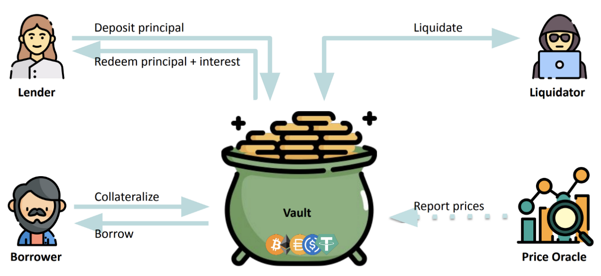
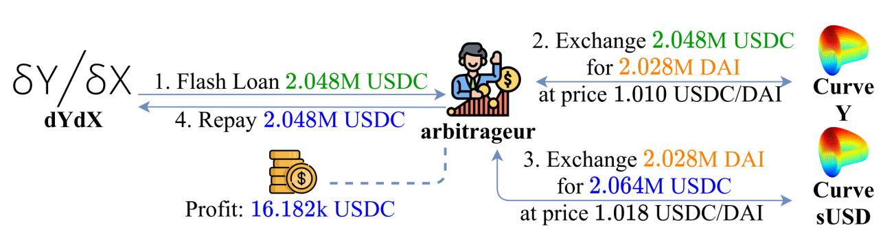

graph LR
L["예치자<br/>Lender"] -- "예치 (원금)" --> V[("금고<br/>Vault")]
V -- "원금 + 이자" --> L
B["대출자<br/>Borrower"] -- "담보 예치<br/>Collateralize" --> V
V -- "대출 Borrow" --> B
O["가격 오라클<br/>Price Oracle"] -. "시세 보고" .-> V
V -- "위험 포지션 청산" --> Q["청산자<br/>Liquidator"]
Lecture 13. DeFi 대출 프로토콜: 담보·청산·헬스팩터·플래시론
blockchain
- 은행이라는 주체가 없는 대출 플랫폼은 어떻게 떼이지 않고 돈을 빌려줄 수 있는가?
- 청산 임계값 (Liquidation Threshold) 과 헬스팩터 (Health Factor) 는 무엇이고, 언제 청산 (Liquidation) 이 일어나는가?
- 청산이 실패하는 상황(담보 급락·가스비 폭등)은 왜 위험하며, 프로토콜은 어떻게 대비하는가?
- 담보 없이 빌리는 플래시론 (Flash Loan) 은 어떻게 가능한가?
1. 대출 프로토콜이란 — “주인 없는 은행”
Lending Protocol
예금·대출이 되는 “주인 없는 자판기” 대표적 DeFi
대출 프로토콜 (Lending Protocol) 은 돈을 맡기고(예금) 빌릴 수 있는 플랫폼인데, 은행이라는 중앙 주체가 없다. 교수님 표현으로는 “주인 없는 은행 / 주인 없는 자판기”. Uniswap과 비슷하게 2017년 말에 등장해 2019~2020년을 지나며 크게 주목받았고, 지금도 가장 대표적인 DeFi (Decentralized Finance) 프로토콜이다.
핵심 참여자는 4명 + 1개의 금고다.
| 참여자 | 하는 일 |
|---|---|
| 예치자 (Lender) | 금고(Vault)에 돈을 예치 → 원금 + 이자(interest) 를 돌려받음 |
| 대출자 (Borrower) | 담보(collateral, 보통 암호화폐) 를 맡기고 다른 자산(예: USD 스테이블코인)을 빌림 |
| 청산자 (Liquidator) | 담보 가치가 떨어지면 위험한 포지션을 청산시킴 |
| 가격 오라클 (Price Oracle) | 담보의 현재 시장가를 외부에서 가져와 프로토콜에 제공 |
청산
아무나 청산 가능 상태일 때 청산 프로토콜 실행 가능하다.
PDF 자료 연결 — 동작 구조
슬라이드 “Lending Protocol — How it works” 다이어그램:

대표 프로토콜: Compound, MakerDAO(Maker), Aave. (타임라인상 Uniswap·MakerDAO가 2018년경 등장 → 2020~2021 DeFi 붐)
2. 왜 과담보(Over-collateralization)인가
Over-collateralization
신원을 모르니 담보 > 대출 필수 (보통 1.5배)
블록체인 위에서는 빌려주는 쪽도 빌리는 쪽도 누가 누군지 모른다. KYC (Know Your Customer) 도, 법의 보호도 없는 “무법지대”에서 돈을 돌려받으려면 방법은 하나뿐 — 담보가 대출보다 무조건 커야 한다.
- 과담보 (Over-collateralization):
담보 가치 > 대출 가치. 보통 빌리려는 가치의 1.5배, 변동성이 작은 안전한 자산은 1.3배 정도를 예치해야 빌릴 수 있다. - 그럼 왜 더 큰 가치를 맡기고 더 작은 걸 빌리지? → 부동산 담보대출과 같은 논리다. “이더리움·비트코인은 팔기 싫은데 급전(월세·보증금)이 필요하다” 는 경우, 자산을 팔지 않고 담보로 맡긴 채 현금을 융통한다.
부연 설명 — Lender의 이자는 어디서?
예치자(Lender)가 받는 이자는 대출자(Borrower)가 내는 대출 이자에서 나온다. 이자율은 보통 풀의 이용률(utilization rate) 에 따라 알고리즘으로 자동 결정된다(빌려간 비율이 높을수록 금리 상승). 출처: Aave — Borrow Interest Rate
예시 (PDF): 200$어치 ETH를 담보(collateral) 로 잡고 100$어치 USDC를 대출 → 담보가 대출의 2배. 담보 가치가 급락해 collateral < loan이 되면 떼일 위험이 생기므로, 이를 막기 위한 청산(Liquidation) 장치가 존재한다.
3. 청산 임계값 (Liquidation Threshold) 과 헬스팩터 (Health Factor)
LT vs HF
LT = 프로토콜이 정한 파라미터 (참는 한계)
HF = 지금 얼마나 건강한지 지표
담보가 어디까지 떨어졌을 때 청산할지 그 기준이 필요하다. 담보 가치가 대출과 같아질 때(1배)까지 기다리면 이미 늦다 — 암호화폐 가격이 떨어지는 속도가 더 빠를 수 있기 때문이다.
청산 임계값 (Liquidation Threshold, LT): 프로토콜이 정하는 파라미터. “담보 가치가 대출 대비 얼마까지 떨어지는 걸 참아줄 것인가.”
\[\text{담보 가치} \times \text{LT} < \text{대출(부채)} \quad\Rightarrow\quad \textbf{청산 가능}\]
- LT가 낮을수록 보수적이고 안전하지만 자본 비효율적이다. 예를 들어 LT = 0.1이면 담보가 대출의 10배 이상이어야 유지된다 (1억 넣고 1천만 원도 못 빌리는 셈). 보통은 0.4~0.5 수준.
- 자산마다 LT가 다르다: 변동성이 작은 BTC·ETH는 덜 보수적으로, 시가총액이 작아 가격 변동이 심한 코인은 더 보수적으로(LT를 낮게) 잡는다. 프로토콜이 합의로 정하며 중간에 바뀔 수 있다.
헬스팩터 (Health Factor, HF): 지금 포지션이 얼마나 건강한지(위험한지) 나타내는 지표.
\[HF = \frac{\text{담보 가치} \times \text{LT}}{\text{대출(부채)}}, \qquad HF < 1 \;\Rightarrow\; \textbf{청산}\]
부연 설명 — 실제 Aave의 정의와 동일
Aave 공식 문서도 동일하게 정의한다: 헬스팩터는 “청산 임계값으로 가중된 담보 가치 ÷ 총 부채” 이며, HF가 1 미만으로 떨어지면(담보 가치 하락 또는 부채 가치 상승) 청산이 트리거된다. 출처: Health Factor & Liquidations — Aave
청산 과정 예시
담보 ETH가 200$ → 150$ 로 하락, 대출 100$, LT = 0.5인 상황:
\[HF = \frac{150 \times 0.5}{100} = 0.75 < 1 \;\Rightarrow\; \text{청산 가능}\]
이때 청산자(Liquidator) 가 개입한다 (유인이 있어야 하므로 담보를 할인된 가격에 가져감):
- 대출자의 빚 100 중 60을 대신 갚아준다.
- 그 대가로 60보다 큰 가치인 70어치 담보를 가져간다 (차액 10이 청산자의 보상 = liquidation bonus).
- 결과: 담보
150 - 70 = 80, 부채100 - 60 = 40남음.
\[HF_{\text{청산 후}} = \frac{80 \times 0.5}{40} = 1.0 \;\Rightarrow\; \text{다시 안전 구간으로 복귀}\]
청산자는 담보를 싸게 사서 수수료 이득을 챙기고, 프로토콜은 담보 > 부채 상태를 유지할 수 있어 윈윈이다.
graph TD
A["담보 200$ / 대출 100$<br/>HF = 1.0 (안전)"] -->|"담보 급락 200→150"| B["HF = 150×0.5/100 = 0.75<br/>⚠️ HF < 1"]
B -->|"청산자: 60 상환(70을 싼 가격에 구매) +<br/>담보 70 회수"| C["담보 80 / 부채 40<br/>HF = 80×0.5/40 = 1.0 복귀"]
4. 청산이 실패하는 위험 — 그리고 프로토콜의 대비
청산은 만능이 아니다. 두 가지 상황에서 청산이 제때 일어나지 못해 담보 < 부채가 된다.
- 담보가 너무 빨리 폭락 — 블록 타임이 12초인데 그 사이 담보가 반토막 나거나, 해킹으로 담보 토큰이 폭락하면 청산할 새가 없다. 이렇게 되면 빌린 사람은 신원이 노출되지도, 법의 제재를 받지도 않으므로 그냥 대출금을 들고 튀면 된다(담보가 어차피 쓰레기가 됐으니 갚을 유인 0).
- 청산 이득 < 네트워크 수수료(gas) — 가격 급락 시 네트워크가 혼잡해져 가스비가 폭등하면, 청산해도 남는 게 없어 아무도 청산하지 않는다.
데스 스파이럴
청산 → 담보 매도 → 추가 하락 → 추가 청산 하락에 가속이 붙음
부연 설명 — 루나 사태 & Black Thursday
- 루나(Terra) 붕괴 (2022.5): 루나를 담보로 달러를 빌렸는데 루나가 사실상 0원이 되자, 굳이 휴지가 된 담보를 되찾으려 대출금을 갚을 이유가 사라졌다.
- Black Thursday (2020.3.12): 코로나 폭락으로 ETH가 급락하고 네트워크가 혼잡해져 가스비가 폭등하자, MakerDAO 청산 경매에서 경쟁자가 없어 한 봇이 0 DAI 입찰로 담보를 가져가 약 $832만(8.32M) 규모가 0에 청산됐다. 이후 모든 DeFi 청산 시스템의 리스크 설계가 이 사건을 기준으로 바뀌었다. 출처: Black Thursday for MakerDAO — Whiterabbit
대비책: MakerDAO 등 프로토콜은 예치·대출 양쪽에서 수수료 일부를 떼어 금고(safety module)에 적립해, 이런 비상 상황에서 손실을 메울 수 있게 한다. 주인은 없지만 커뮤니티가 이런 파라미터와 비상책을 운영한다.
청산 규모와 “데스 스파이럴”
- 누적 청산 규모는 막대하다 — Aave 약 $4.6B, MakerDAO/Sky는 6조 원 이상, 그보다 큰 곳도 있다.
- 평소엔 청산이 거의 없다가 가격 급락 시 폭증한다(최근 국제 정치 이슈로 코인 급락 시 역대 최대치 기록).
- 데스 스파이럴 (death spiral): 청산자는 가져간 담보를 즉시 시장에 매도한다 → 가격이 더 떨어짐 → 더 많은 포지션이 청산됨 → 담보가 또 시장에 쏟아짐 → 하락에 가속이 붙는다.
- 모든 게 온체인(on-chain) 이라 누가 얼마를 청산했는지/당했는지 다 보인다. 그래서 트레이더들은 “가격이 여기까지 떨어지면 얼마가 청산되겠다” 를 미리 계산하며 청산 레벨을 주시한다 — 중앙화 시스템과 구별되는 특징이다.
5. 플래시론 (Flash Loan) — 담보 없는 대출
Flash Loan
한 트랜잭션 안에서 빌리고 갚으면 담보가 필요 없다 (atomic)
플래시론 (Flash Loan) 은 무담보 대출이다. 어떻게 담보 없이 가능할까?
하나의 트랜잭션 안에서 빌리고 → 무언가를 하고 → 갚는 것이 전부 끝나기 때문이다.
이더리움 트랜잭션은 그 안에서 컨트랙트의 함수를 호출하고, 그 함수가 다시 여러 함수를 연쇄 호출하며 사고·팔고·예치하고·상환하는 여러 동작을 한 번에 수행할 수 있다(원자적 실행, atomic). 빌린 돈을 같은 트랜잭션 끝에 갚지 못하면 트랜잭션 전체가 되돌려지므로(revert) 대주(貸主)는 떼일 일이 없다.
주 용도 — 차익거래(arbitrage): DEX 간 가격 차이가 크면, 플래시론으로 거금을 빌려 싼 곳에서 사서 비싼 곳에 팔고, 수수료를 갚고 차익을 챙긴다.
- 예: dYdX에서 200만 달러를 빌려 → Curve의 Y풀과 sBTC풀 사이 차익거래로 이득 → 원금 상환(repay).
- 초기엔 경쟁이 적어 할 만했지만, 지금은 이것만 노리는 봇들이 많고, 트랜잭션을 블록에 넣으려면 블록 생성자에게 높은 수수료(로비) 를 줘야 할 정도다(MEV 경쟁).

부연 설명 — 플래시론과 해킹
플래시론은 순간적으로 막대한 자금을 동원할 수 있어 DeFi 해킹에 악용되는 경우가 많다. 예치 담보 없이도 거금을 빌려 DEX 풀의 비율을 일시적으로 왜곡시키고(가격 조작), 그 왜곡된 가격을 참조하는 다른 프로토콜을 공격하는 식이다. 그래서 “플래시론” 하면 이미지가 좋지 않지만, 기술 자체는 중립적인 차익거래 도구다. 출처: Flash Loans — Aave Docs
개념 연결
- 12강의 DEX/AMM·유동성 풀이 “자산을 교환”하는 인프라였다면, 13강의 대출 프로토콜은 그 위에서 “자산을 빌리고 빌려주는” 금융 레이어다. 플래시론 차익거래가 바로 DEX 풀을 활용한다는 점에서 둘은 직접 연결된다.
- 가격 오라클(Price Oracle) 은 청산의 전제 조건 — 담보의 실시간 시세를 알아야 HF를 계산할 수 있다. (오라클 자체는 곧 다룰 주제)
- 데스 스파이럴은 12강의 슬리피지와 연결된다 — 청산자가 담보를 대량 매도할 때 유동성이 얕으면 가격이 더 크게 밀린다.
- 대출 프로토콜은 은행 없는(주인 없는) 예금·대출 플랫폼. 참여자는 Lender·Borrower·Liquidator·Price Oracle, 자산은 Vault에 모인다.
- 신원·법적 보호가 없으므로 과담보(Over-collateralization) 가 필수 — 담보가 대출의 보통 1.5배 이상.
- 청산 임계값(LT) 은 프로토콜이 정한 파라미터, 헬스팩터(HF = 담보×LT / 부채) 가 1 미만이면 청산. 청산자는 담보를 할인가에 가져가 차익을 얻고 포지션을 안전 구간으로 되돌린다.
- 담보 급락·가스비 폭등 시 청산 실패가 발생(루나 사태, Black Thursday) → 프로토콜은 수수료를 적립한 안전 금고로 대비. 청산 매도가 추가 하락을 부르는 데스 스파이럴에 유의.
- 플래시론은 한 트랜잭션 안에서 빌리고 갚는 무담보 대출로, 차익거래에 쓰이지만 가격 조작 해킹에도 악용된다.